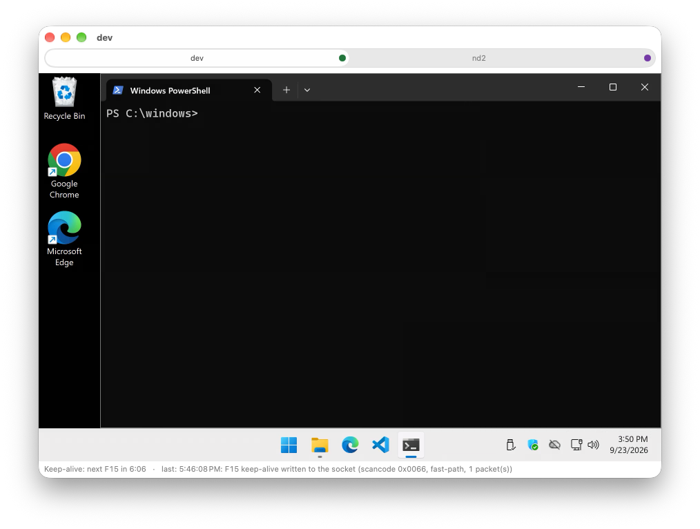
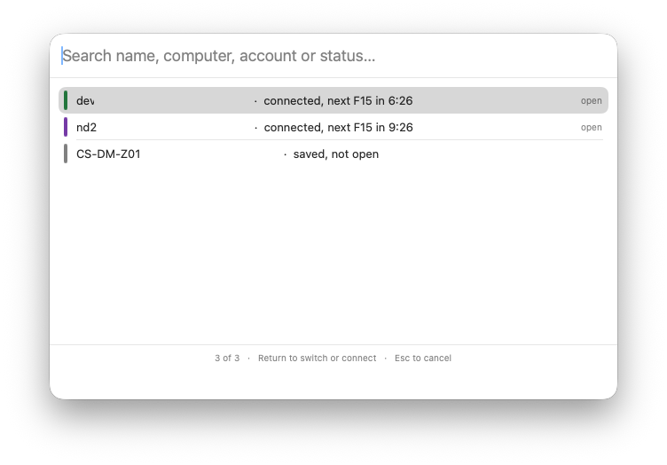
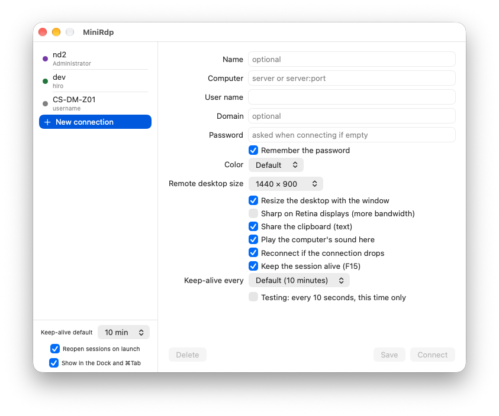
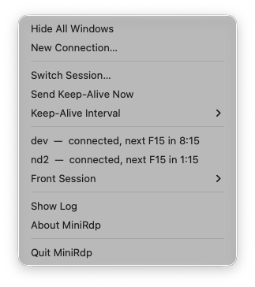

macOS Menu Bar App • v1.0.1
Windows Utility • v1.3.3
MiniRDP Client
A clean, high-performance Remote Desktop client for power users on Mac and Windows.
Screenshots
-

Tabbed remote sessions with Retina scaling
-

Quick Switcher (⌘K) to instantly search & jump hosts
-

Connection profiles & per-session keep-alive
-

Menu bar status & keep-alive monitor
{kind=link}
{kind=link}
{kind=link}
{kind=link}
Why MiniRDP
Standard Remote Desktop windows get messy fast when you manage multiple lab or server environments, and sessions disconnect when you step away. MiniRDP packages connections into clean tabs and keeps sessions alive with smart anti-idle (F15) and zero bloat.
- Smart Per-Session Keep-Alive: Automated, non-intrusive F15 pulses that prevent server idle timeouts even when windows are minimized or hidden in the menu bar / system tray.
- Tabbed Sessions & Multi-Window: Run multiple remote desktops side-by-side or drag across displays without recreating controls.
- Seamless Clipboard Sync: Bidirectional copy-and-paste for text, images, and files between your desktop and remote sessions.
- Quick Switcher (⌘K on Mac / Ctrl+K on Windows): Instantly search and jump across active sessions and saved profiles by name, account, or IP.
- Native & Secure: Built with native OS technologies (Swift & Apple Keychain on macOS; C# & DPAPI on Windows)—passwords are encrypted and never saved in plaintext.
macOS
Windows
Windows launch note: Because MiniRDP for Windows is a free indie release without an enterprise certificate, Windows SmartScreen may show an alert on first open. Simply click "More info" and then "Run anyway".